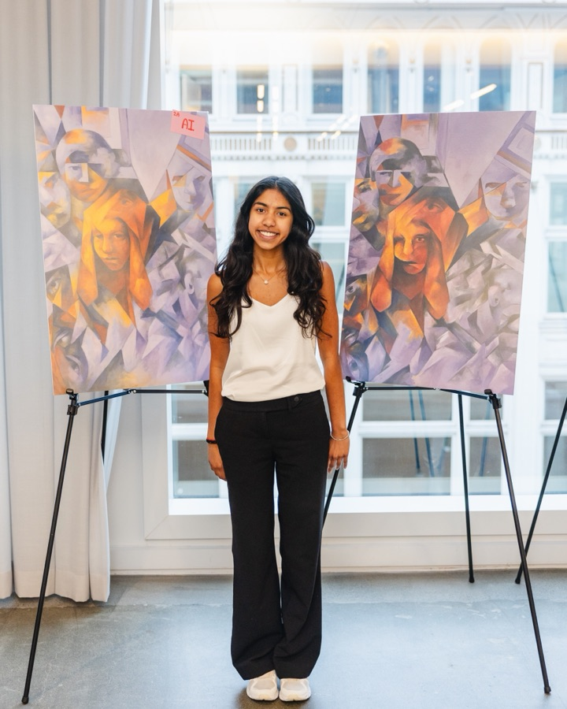

Essay · Credo AI · Agents of Trust Summit
Originality, Augmentation, and Ownership: Creativity in the Age of AI
Written for the workshop “Beyond the Algorithm: Protecting Human Creativity in the Age of AI.”
In art, the subject is rarely the content. The flower in a painting, the content, may convey subjects of fragility or evanescence. The subject emerges through the conjunction of a viewer’s interpretation, greatly influenced by their own unique experiences, and the author’s intent. Great art can spark thought or reframe perspective, resonating with many as the artist creates a strong connection between what is seen and what is felt.
Behind a piece are 3 intertwined components: ideas, materials, and process. Ideas evolve through the deeper process of using materials, where iteration, instinct, and small choices drive output. This lived process is where artistry and creativity lies. While this experiment, serving as a sort of Turing test for art, shows that AI models can now expertly replicate style and render content, it only considers the output. AI may flood the world with competent art, but great art still springs from a unique creative process, one that AI can influence but not yet replace.

Which one is the oil painting? Tap one in each column to find out.
However, in this in-between, AI-augmented creativity can thrive. When artists leverage AI as a collaborator, it can become another source of inspiration and a tool to push their intention and perspective further. Just as the advent of photography changed the landscape by fulfilling the need for accurate depictions and catalyzing a shift away from realism to more conceptual, modern movements, AI can inspire new artistic direction. Technical proficiency may matter less in this new era, but since art teaches us how to see differently, think critically, and communicate meaningfully, it will stay vital in the AI age.
At the same time, augmentation raises questions of originality and ownership. Writer Austin Kleon describes artists as being “creative kleptomaniacs” who inevitably are influenced by what came before and attributes creativity to the transformation of existing ideas. In this way, every creation draws on many sources and is never entirely original, yet it remains unique because it carries the artist’s lived experience. AI models can serve as another medium through which to transform.
Credit and attribution remain critical. Training on artists’ work without permission or replicating styles without attribution is exploitative and greatly undermines artists’ efforts. Circulating forgeries or modifications of a work can be damaging to reputations and livelihoods. Art is not just an economic output but also a deeply personal externalization that shouldn’t be misused as artists should retain autonomy over how their ideas, styles, and identity are applied.
I view AI as sublime, in Emerson’s 19th century Transcendentalist definition: something vast and powerful that simultaneously evokes complete awe and a sense of terror. The challenge is to meet this sublime force with care, responsibility, and ethics so that AI doesn’t undermine creativity, but enhances and expands it, pushing human imagination further than ever before.